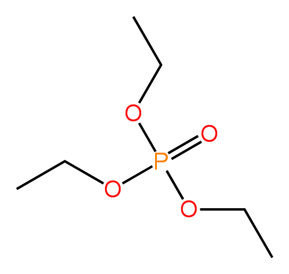

有机磷化合物概述
有机磷化合物是指分子中含有碳-磷（C-P）键的一类有机化合物，在医药、农药、材料科学及有机合成中具有重要应用。
结构多样性
磷原子可形成多种价态（+3、+5）和配位数（3、4、5），衍生出膦、亚膦酸、磷酸酯等丰富的官能团。
应用广泛
用于药物合成（如抗病毒药物）、农药（如对硫磷）、材料科学（如阻燃剂）及有机合成中的关键反应（如Wittig反应）。
历史意义
1954年发现的Wittig反应彻底改变了烯烃合成策略，其发现者Georg Wittig于1979年获得诺贝尔化学奖。
基本结构示例
三苯基膦 (Triphenylphosphine)

Ph₃P
磷酸三乙酯 (Triethyl phosphate)

OP(OEt)₃